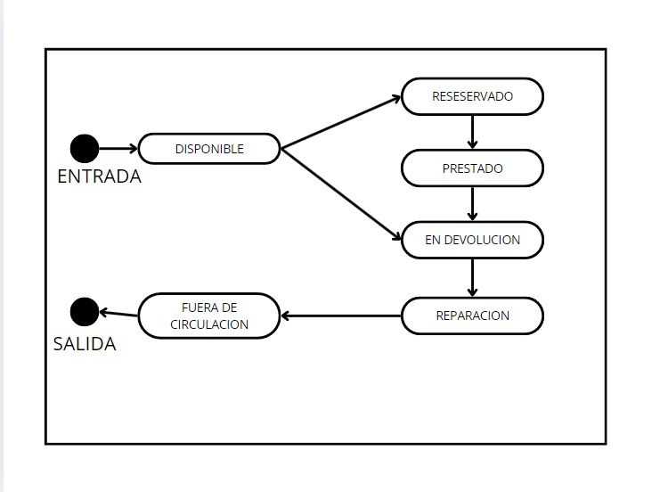

Gestión de Mantenimiento y Reportes
Descripción
Este módulo proporciona herramientas avanzadas para mantener la base de datos del sistema actualizada y generar reportes periódicos que ayuden en la toma de decisiones administrativas. Los reportes incluyen información sobre el estado del inventario, patrones de préstamo, multas acumuladas, libros más solicitados y libros menos populares. Además, los bibliotecarios pueden realizar tareas de mantenimiento, como eliminar registros duplicados, corregir errores de entrada y ejecutar auditorías del sistema para garantizar la integridad de los datos.
Estados del Libro
- Disponible: El libro está accesible para ser prestado o vendido. Representa el estado inicial de un libro sin restricciones de uso.
- Reservado: El libro ha sido apartado por un usuario o entidad y no puede ser prestado a otros. Se verifica que otro usuario no lo haya adquirido previamente.
- Prestado: El libro está en posesión de un usuario y no está disponible para otros. Se asegura que el préstamo esté registrado en el sistema.
- En Devolución: Indica que el usuario debe devolver el libro, ya que el plazo de préstamo ha finalizado. Permite hacer seguimiento a los libros pendientes de retorno.
- Reparación: El libro está en proceso de mantenimiento debido a daños o deterioro. No está disponible para préstamos hasta que se complete la reparación.
- Fuera de Circulación: El libro ha sido retirado del inventario y ya no aparece en la base de datos. Este estado puede aplicarse por pérdida, descarte o decisión administrativa.
Transiciones entre Estados
Los libros pasan por diferentes estados dependiendo de las acciones realizadas por los usuarios y los bibliotecarios. La transición de un estado a otro se realiza bajo las siguientes condiciones:
- De Disponible a Reservado: Un usuario puede reservar un libro disponible, cambiando su estado a reservado.
- De Reservado a Prestado: Una vez que el usuario recoge el libro reservado, el estado cambia a prestado.
- De Prestado a En Devolución: Cuando el plazo de préstamo ha expirado, el libro entra en el estado de devolución.
- De En Devolución a Disponible: Tras la devolución, el libro vuelve al estado disponible, listo para ser prestado nuevamente.
- De Disponible a Reparación: Si el libro está dañado, se cambia a reparación hasta que sea arreglado.
- De Reparación a Disponible: Una vez reparado, el libro vuelve a estar disponible.
- De Disponible a Fuera de Circulación: Si el libro se pierde o se descarta, se retira del inventario y se marca como fuera de circulación.